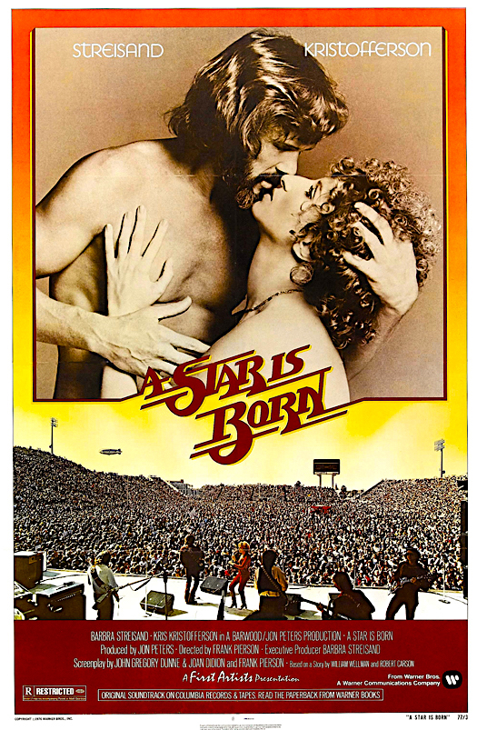

A Star Is Born
49th Academy Awards
(Oscars 1977)
4 Nominations, 1 Award
| Nominations | ||
|---|---|---|
| Category | Nominees | Result |
| Cinematography | Robert Surtees | Nominated |
| Sound | Dan Wallin, Robert Glass, Robert Knudson, and Tom Overton | Nominated |
| Music (Original Song Score and Its Adaptation or Adaptation Score) | Roger Kellaway | Nominated |
| Music (Original Song) "Evergreen (Love Theme From A Star Is Born)" |
Barbra Streisand and Paul Williams | Won |